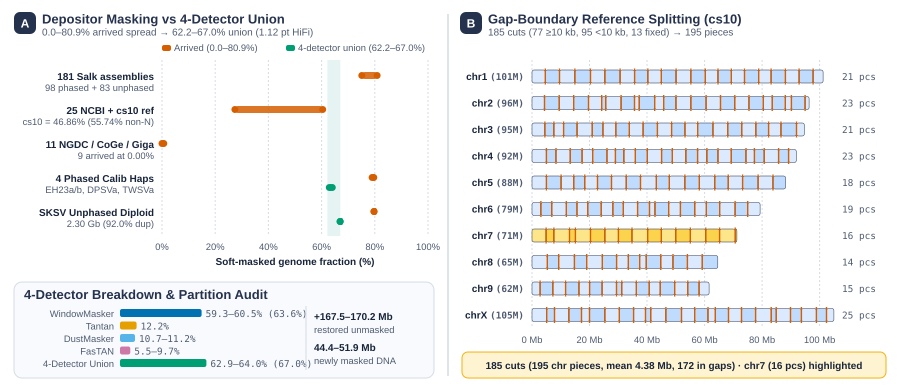
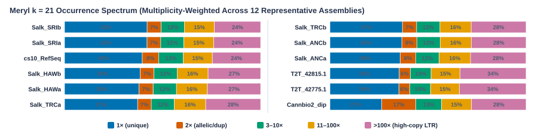
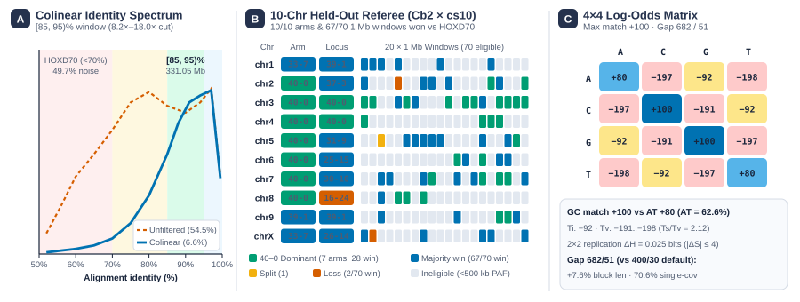
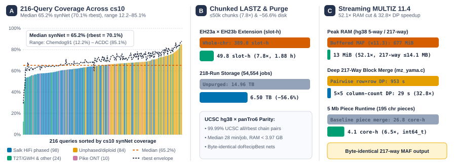
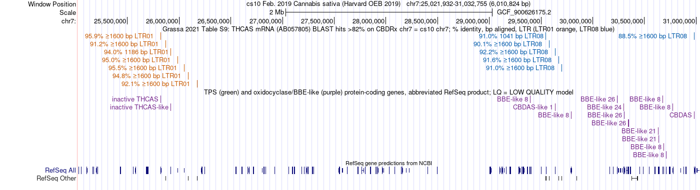
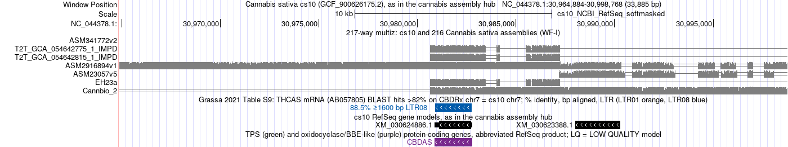
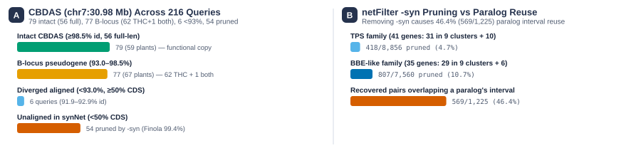
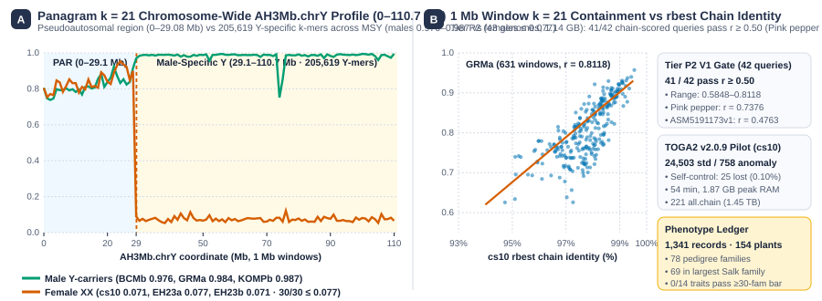

AFour cross-species bottlenecks
In Cannabis sativa, interspersed repeats (~64–67% LTR retrotransposons) surround dense tandem metabolic arrays. Projecting 216 query assemblies onto the linear cs10 (CBDRx) reference coordinate grid confronts four vertebrate-default obstacles:
- 1Masking biasArrived soft-masking spans 0.00–80.86% across 218 assemblies, and KegAlign excludes lowercase seeds
- 2Cross-species matrixHOXD70 targets <70% identity, which in Cannabis is 49.7% chance noise (Ts/Tv = 0.872 vs 0.74 floor)
- 3Superlinear scalingWhole-chr LASTZ scales as O(n1.9), while 217-way MULTIZ overflows 32-bit scores & buffers MAFs in RAM
- 4Macro-syntenic netsHuman-mouse
netFilter -syn(maxFar = 200 kb) prunes rearranged tandem gene clusters

wfi_cs10_splits.bed) partition cs10 into 195 ~5 Mb pieces without cutting inside any gene (B).BStandardized 4-detector repeat masking
To eliminate submitter ascertainment bias across our 221 curated assembly records (217 non-redundant in MULTIZ representing 164 prefix groups and 156 distinct plants, scored with rosales_odb12 BUSCO), our brc-tools workflow strips arrived masks and unites four de novo detectors:
| Assembly / Cohort | Arrived Mask | 4-Detector Union | Partition Audit & Compute |
|---|---|---|---|
| 181 Salk pangenome haplotypes | 75.12–80.86% | 62.19–67.04% (5-genome intake pilot: 22.61 → 4.85 pt spread) | Depositors over-masked ~22% diverged single-copy DNA |
25 NCBI GenBank + cs10 | 27.42–60.43% (cs10 46.76%) | Restores cs10 seed nucleation from 53.24% to ~36% | |
| 11 NGDC / CoGe / GigaDB | 0.00–0.68% | Prevents unmasked queries from seeding 100% of repeats | |
4 Phased Calibration Haps (EH23a/b, DPSVa, TWSVa) | 76.84–78.18% | 62.90–64.02% (1.12-pt window) | WM 59.3–63.6%, Dust 10.7–11.2%, Tantan 12.2%, FasTAN 5.5–9.7% · 3.64–3.99 CPU-h/hap |
Diploid SKSV (2.30 Gb, 92.0% BUSCO dup) | 78.41% | 66.95% (4.05-pt panel window) | 432.1 Mb restored, 139.1 Mb newly masked · 10.34 CPU-h |

CEmpirical intra-species substitution matrix
We adapted the Chiaromonte log-odds protocol across two independent phased haplotype pairs (EH23a × EH23b and DPSVa × TWSVa, 95.3% rosales_odb12 BUSCO completeness, 1.8–2.0% duplication). Inverting the training window to [85, 95)% identity, excising protein-coding exons (−7.3% chained segments), and enforcing single-chain colinearity (--max-chains 1) suppressed off-chromosome paralogy 8.2-fold on Cb2 × cs10 (54.5% vs 6.6%) and 18.0-fold genome-wide on EH23a × EH23b.
[85, 95)% colinear non-coding pairs (Ts/Tv = 2.119, H = 1.4140 bits)axtChain shuffled-null suppression + scaled 682/51 gaps (70.6% single-cov)Normalized to max match 100 (+80 A/T, +100 C/G, −92 transitions, −191/−197/−198 transversions), our matrix also beat the ±100 unit matrix on 10/10 held-out Cb2 × cs10 arms, 10/10 loci, and 62/70 windows across 40 false-match budgets.

Cb2 × cs10 chromosomes and 70 eligible 1 Mb windows (B), and symmetric 4×4 log-odds weights with 682/51 gap scaling (C).DCollection-native LASTZ & streaming MULTIZ 11.4
- Growler LASTZ (
growler_ucsc_pair): Couples KegAlign v0.3.4 GPU collection seeding with indexed.2bitarchives, compact LAV, and piped PSL chaining. Batching anchor files into≤50,000-segment chunks cutsEH23a × EH23bgapped extension 7.8-fold (389.0 → 49.8 slot-h,1.88 hwall-clock, median 28 min/job,<3.97 GBRAM) while matching 99.99% of UCSC'shg38 × panTro6all.chainandrbest.chainpairs. - Storage & 218-run production cohort: Purging transient intermediate collections after workflow completion reduced total Galaxy history storage across all 218 runs (54,554 jobs, 10,325 job-hours) from 14.96 TB to 6.50 TB—reclaiming 56.6% (
8.46 TB). Syntenic nets cover a median 65.2% ofcs10non-N bases across 216 queries (range 12.2–85.1%). - Streaming 64-bit column-count MULTIZ 11.4: Replacing in-memory MAF buffering with coordinate-ordered streaming cursors and widening score accumulators to
int64_t(multiz#19, fixing 29 deep blocks with scores≥231onNC_044376.1.02) cuthg385-waychrXmemory 52.1-fold (677 → 13 MiB, 217-way worker RAM≤14.1 MB). Factoringmz_yama.cDP loops through column nucleotide counts(cA, cC, cG, cT, cN)(multiz#28) accelerated a deep 217-way merge 32.8-fold (953 → 29 s) and 5 Mb pieces 6.5-fold (26.8 → 4.1 core-h) across 195 chromosomal pieces + unplaced scaffolds with byte-identical output.

synNet (median 65.2%) and rbest (median 70.1%) coverage across 216 queries by assembly class (A), chunked LASTZ speedup and 218-run storage purge (B), and MULTIZ 11.4 streaming RAM (52.1×) and column-count DP speedup (32.8× block, 6.5× piece) (C).ETandem metabolic clusters & syntenic net limits
- Genome-wide tandem census & permutation audit: Under strict MCScanX criteria (BLASTp E ≤ 10−10, top 10 hits), 3,035 of
cs10's 25,296 RefSeq protein-coding genes reside in 1,208 tandem arrays (K = 0) and 5,123 (20.3%) in 1,796 clusters (K ≤ 10), including 41 terpene synthases (TPS) (31 in 9 clusters) and 35 cannabinoid oxidocyclases (BBE-like) (29 in 9 clusters). Across 20,000 cluster-level permutations, nominal TPS low-identity enrichment (37.0% vs 11.0% controls, p = 0.022) does not survive family-wise correction (pFWER = 0.12, threshold-free p = 0.40, BBE-like 2.8%, p = 0.59). - Functional
CBDASvs B-locus pseudogenes: Atcs10functionalCBDAS(LOC115697762, chr7:30.98 Mb), our 217-way alignment separates 79 assemblies (59 plants) at≥98.5%identity from 77 assemblies (67 plants) at93.0–98.5%—where all 63 Lynch-annotated drug-type cultivars paircs10CBDASwith the ~94% B-locus pseudogene nearTHCAS. netFilter -synpruning vs paralog reuse: Human-mouse distance cutoffs (maxFar = 200 kb) pruned 4.7% of TPS (418/8,856) and 10.7% of BBE-like (807/7,560) pairs—dropping 54CBDASassemblies insynNet, including Finola's intact 99.4% transposed copy (CM011610.1:21.84 Mb, 26.8 Mb from its enclosing gap). Simply removingnetFilter -syncauses 46.4% of recovered pairs (569/1,225, 39.1% at≥50%shared CDS bases) to reuse paralog query sequence, motivatingrbestnets + TOGA2/BOAST orthology.
cs10 chr7 (25.02–31.03 Mb) CBCAS & CBDAS cassettes
multiz217way at CBDAS (intact, ~94% B-locus, & pruned rows)

chr7 and netFilter -syn trade-off. Browser views of the 6 Mb cannabinoid synthase super-cluster (left) and multiz217way at CBDAS (right), paired with 216-query trimodal CBDAS resolution (A) and netFilter -syn pruning vs 46.4% pre-filter paralog reuse (B).FPanagram bitmaps, TOGA2 pilot, & phenotype ledger
- Panagram v1.1.0 pan-k-mer indexing (
panagram_index/panagram_view): Tier P1 (17 genomes, 13.3 Gb) selected k = 21 over k = 31 (higher linear 1 Mb window Pearson r withrbestidentity in 16/16 Salk haplotypes, mean r = 0.7150 vs 0.6901). Tier P2 across 43 genomes (32.64 Gb, 5.05 h on 16 Laila slots, 1.14 GB index) passed r ≥ 0.50 in 41 of 42 chain-scored query genomes (r = 0.5848–0.8118, includingPink pepperat r = 0.7376) with clean non-PARchrYseparation (0.976–0.987 vs females ≤ 0.077). Only one Sri Lankan ONT haplotype (ASM5191173v1, r = 0.4763, Merqury QV 24.01/24.11 vs Travis CBD 24.96/24.92) fell below 0.50 (cause open). - TOGA2 v2.0.9 orthology pilot: We stratified all 25,261
cs10nuclear protein-coding genes (33,639 transcripts, excluding mitochondrionNC_029855.1) into 24,503 standard and 758 reference-anomaly genes across 221 VGPall.chaindatasets (1.45 TB). On its pre-registered zero-divergence self-alignment control, TOGA2 classified every standard gene and called 25 of 24,503 lost (0.10% against a ≤ 0.5% bar) in 54 min at 1.87 GB peak RAM, andEH23achain-preparation arms are underway. - Pedigree-verified phenotype ledger: Joining 43 double-checked extractions (30 publications + 10 BioSamples) across 215 assemblies yielded 1,341 trait records across 154 plants in 78 pedigree families (69 plants in the largest Salk family, 71 singletons). Under
measured/reportedfiltering, 0 of 14 traits yet meet our ≥30-family, ≥2-class (≥5 families/class) association screen (Varinreaches 30 families, but 37 of 38 non-wild-type plants derive from oneHO40pedigree).

chrY profile and rbest correlation. Chromosome-wide AH3Mb.chrY (0–110.7 Mb) k = 21 profile separating the 0–29.08 Mb PAR from 205,619 male-specific Y k-mers (A), and 1 Mb window rbest chain correlation on GRMa (r = 0.8118) with Tier P2 (41/42 passing), TOGA2, and phenotype scorecards (B).